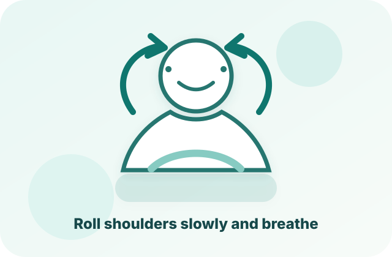
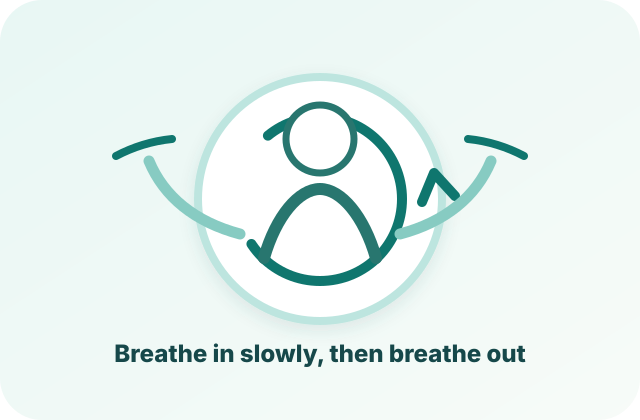
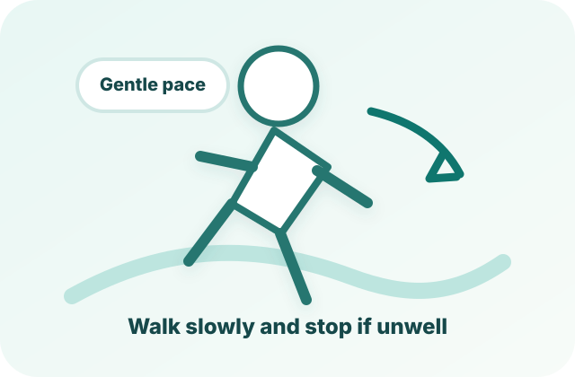

Demo only:CareLink SG supports health awareness and care coordination. It does not diagnose conditions or replace qualified healthcare professionals.
● Daily check-in ready
Good afternoon, David.
When something feels different at home, CareLink SG helps you describe the concern, check urgent warning signs, and choose a safer next step.
86/100
StableToday’s wellness score
!
ESSENTIAL SUPPORT
Hold to call emergency contact
Patient homepage access for urgent caregiver support in this classroom prototype.
RT
Rachel TanDaughter · Primary emergency contact
Press and hold for 3 seconds to activate the emergency contact call demo.
Ready for long-press action.
♥
Heart rate
72 bpm
Within demo range
≈
Blood pressure
118/76
Stable trend
◌
Sleep
7.2 hrs
Last night
↟
Steps
6,420
Goal: 8,000
AI HEALTH STATUS
Daily health summary
✦
Your recent demo readings look generally stable.
Connect Gemini for a plain-language summary based on the health data stored in this prototype.
TODAY
Care plan
CONNECTED HEALTH
Optional wearable connection
CareLink SG works without special equipment. A smartwatch connection is optional and simulated here to show how additional data could support the journey.
No device connectedManual readings only
DECISION SUPPORT
Something Feels Different Check-in
Use voice simulation, text, or guided options to describe a health change and receive safety-oriented next-step guidance.
STARTING POINT
I feel different at home
No equipment required
Voice-first mode selected. In this prototype, voice input is simulated with the text box below.
Ready
Describe what feels different
CareLink SG will screen for urgent warning signs first, then suggest whether to monitor, contact professional support, or seek urgent help.
Monitor→Contact professional→Urgent help
SHAREABLE SUMMARY
Health summary preview
Consent based
Complete a check-in to generate a clear summary for a healthcare professional or trusted contact.
FOLLOW-UP REMINDER
Close the monitoring loop
When the result is not urgent, users can set a simple reminder to check again.
No reminder set in this demo session.
PROFESSIONAL SUPPORT
Find the right support level
CareLink SG can route users to community care, telehealth, a trusted contact, or the dashboard emergency contact flow depending on the result.
CHECK-IN HISTORY
Recent decision support sessions
REMOTE MONITORING
Health Monitoring
Record home readings and visualize changes over time.
Add a health reading
LATEST READING
118/76mmHg
Demo status: stable
Status labels are simplified prototype logic, not medical diagnosis.
7-DAY VIEW
Blood pressure trend
READING HISTORY
Recent entries
Date
BP
Heart rate
Sleep
Steps
GEMINI 2.5 FLASH
AI Health Insights
Turn recent home readings and check-in context into a simple, safety-oriented explanation.
Connect your Gemini API key, then select Analyze recent trends. The prompt includes only the demo readings shown in this prototype.
AI-generated content may be inaccurate. It should support awareness, not diagnose disease or replace professional medical advice.
WHY AM I SEEING THIS?
How the AI Insight Works
01Collect
Use the latest stored home readings.
02Detect
Simple local rules flag sustained changes for demonstration.
03Explain
Gemini converts the data and rule signal into understandable language.
04Escalate safely
The prompt avoids diagnosis and encourages professional support when appropriate.
MEDICATION ADHERENCE
Medication Manager
Track a simple home medication schedule and adherence history.
THIS WEEK
92%
Medication adherence
6/7completed
NEXT REMINDER
Metformin
8:00 PM500 mg · 1 tablet
7-DAY ADHERENCE
Weekly history
RECOVERY GUIDANCE
Exercise Guidance
Visual exercise cards show users how to complete gentle recovery activities instead of relying on imagination.
Image-guided demo
WHY THIS MATTERS
See the movement before starting
Each activity includes a simple illustration, short steps, duration, and a safety reminder so users can follow the movement more confidently at home.

1 MIN · GENTLE
Shoulder & Neck Release
Roll the shoulders slowly to reduce tension while breathing naturally.
Sit or stand comfortably.
Lift both shoulders gently.
Roll backwards and relax.
Stop if you feel pain, dizziness, or unusual discomfort.

2 MIN · CALM
Breathing Reset
Use slow breathing to settle the body before checking how you feel again.
Place one hand on your chest.
Breathe in slowly through your nose.
Breathe out gently and repeat.
Keep the pace comfortable. Stop if breathing feels difficult.

5 MIN · OPTIONAL
Gentle Walk
Move at an easy pace when your recovery plan says light activity is appropriate.
Choose a safe, flat area.
Walk slowly and keep breathing.
Pause if you feel unwell.
Do not continue if you feel dizzy, painful, or unusually weak.
CONNECTED CARE
Care Network
Give users control over what health information is shared with trusted supporters.
SHARING CONTROLS
Choose what to share
User-controlled
!
CARE ALERT DEMO
Unusual trend detected
Demonstrate how a user could share a non-emergency health trend with a trusted caregiver.
CAREGIVER END
Caregiver Dashboard
Rachel Tan can see only the colour status of patients who are currently bound to her caregiver account.
Separate caregiver account
BOUND PATIENTS
Patient status overview
Status only · no detailed readings shown
STATUS LEGEND
HealthyGreen means the patient is currently stable in this prototype.
DangerYellow means the patient may need caregiver attention.
UrgentRed means the patient should be checked immediately.
BINDING CONTROL
Manage patient links
Use this classroom demo control to add, bind, or unbind patients from Rachel Tan's caregiver account.
COMMUNITY SUPPORT
Community Care
Prototype pathways from home monitoring to appropriate community-based support.
＋
Demo service
Community Health Centre
Request a non-urgent follow-up for ongoing monitoring or health education.
◫
Demo service
Telehealth Consultation
Show how users could transition from digital monitoring to a remote consultation.
♡
Demo service
Caregiver Support
Coordinate family or community support while keeping the user in control of sharing.
CARE PATHWAY
From check-in to community support
1Describe concernVoice/text/guided
→
2Screen safelyRed flags + context
→
3Choose next stepMonitor or seek support
→
4Share summaryWith consent
Urgent situations: This prototype is not an emergency service. In a real product, emergency guidance should be designed with qualified clinical and local-service input.
✦
CareLink SG AI Assistant
Powered by Gemini 2.5 Flash when connected
Offline
✦
CareLink SG AI
Hi David. I can explain the demo health data in this prototype. Connect a Gemini API key to start.
For educational prototype use only. Do not rely on the assistant for diagnosis, emergencies, or treatment decisions.
SETUP
Settings & API Connection
Connect Gemini at presentation time without committing a secret to GitHub.
✦
GOOGLE GEMINI API
Gemini 2.5 Flash
Disconnected
No API key is stored.
Presentation-safe approach
The key is stored only in sessionStorage, so it is not written into your repository and is removed when this browser tab/session ends. Clicking Clear / Disconnect removes it immediately. Because this is still a client-side demo, use a dedicated/restricted key and do not treat this as production security.
DISPLAY MODE
Large text version
Switch the whole prototype to a larger text layout for presentation, accessibility, or easier classroom demonstration.
Aa
CareLink SG
Large text preview
Standard text mode
PROTOTYPE DATA
Reset local demo state
Restore default health readings, medications, care network, and sharing settings.
i
ABOUT
About CareLink SG
CareLink SG is an AI-powered community health companion prototype for the Healthcare Beyond Hospitals design challenge. It demonstrates how a user can describe when something feels different at home, receive urgent safety screening, get explainable next-step guidance, and connect with trusted or professional support when needed.
This classroom prototype is designed to minimise data exposure. Demo check-ins, health readings, medications, caregiver names, and display preferences stay in this browser unless an AI feature or share-summary demo is used.
Gemini API key is stored only in sessionStorage and can be removed with Clear / Disconnect.
Prototype data, including check-in history, is stored locally in the browser through localStorage.
When AI analysis or chat is used, only the displayed demo snapshot and user message are sent to Gemini.
This is not a production medical system and does not replace professional healthcare advice.
Q&A
Common questions for demonstration
Presentation ready
What problem does CareLink SG solve?
It helps show how health decision support can move from hospital-only care into the home and community. Users can describe a concern, answer adaptive questions, receive safety-oriented next-step guidance, and share a summary with consent.
Is this a real medical diagnosis tool?
No. It is a design prototype. The AI output is only for awareness and demonstration, and the interface repeatedly reminds users to consult qualified healthcare professionals for real health concerns.
Why does the prototype use Gemini?
Gemini 2.5 Flash is used to turn structured demo data into plain-language summaries. This demonstrates the AI capability required by the IT track without requiring a full clinical AI model.
What data is sent to AI?
Only the current demo snapshot shown in the app, such as recent readings, medication status, trend signal, and the user's chat question. The API key is not committed to GitHub.
How can this be extended in the future?
A future version could add real voice recognition, multilingual voice output, secure backend storage, verified clinical decision rules, appointment booking, and approved provider integrations.